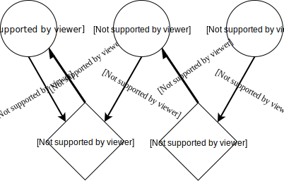
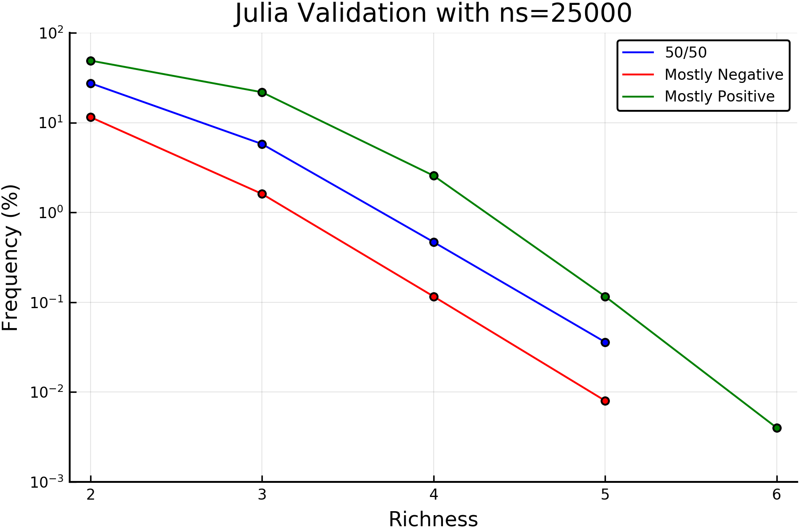
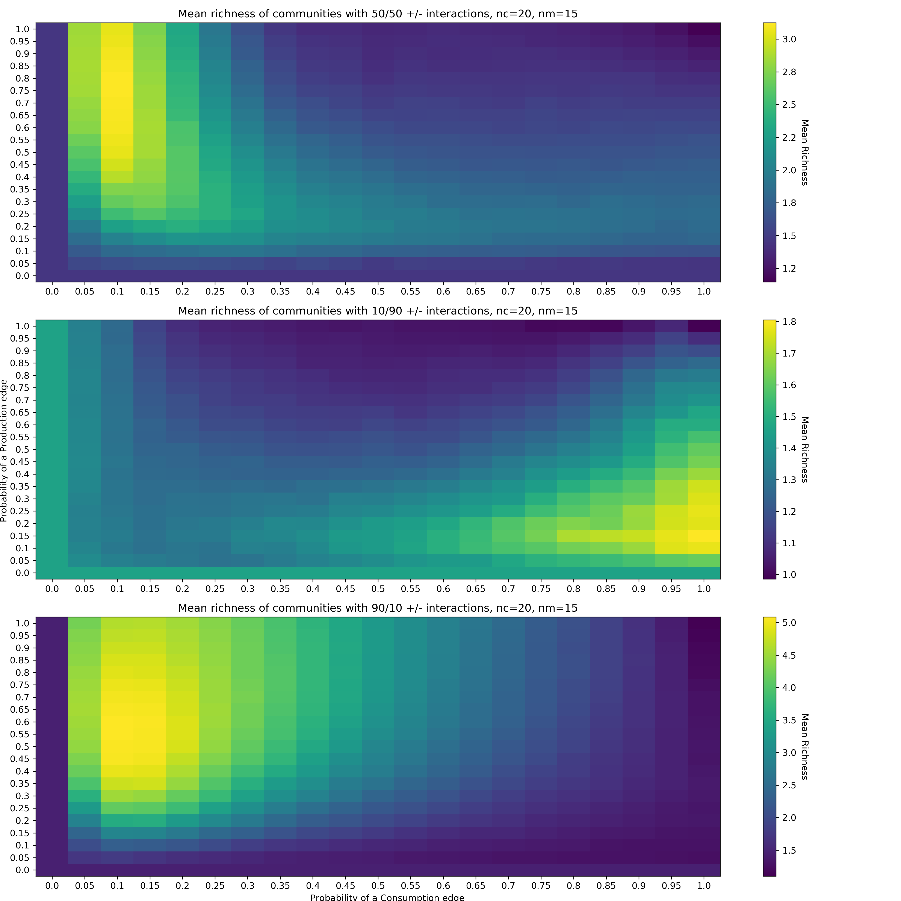
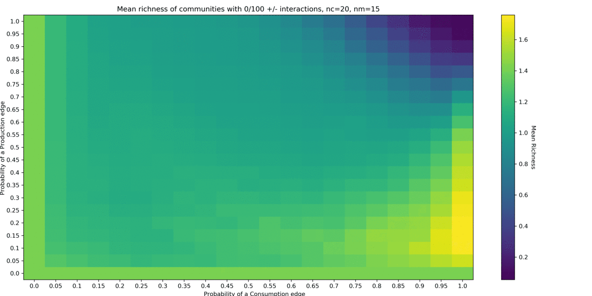

The following manuscript was created using Typora and unfortunately does not conform to Github's rudimentary Markdown syntax. A html render is provided. It is recommended to view the following document either in Typora or equivalent Markdown viewer, or read the html in browser.
Coexistence-via-Chemical-Interactions: a Case Study in Language and Design Choices, and Verification; with New Results
Authors:
- Darius Russell Kish1,2
- Yuezhen Chen1
- Jessica Fong Ng1
- Matthew Uy1
(1) Department of Computer Science, Boston College
(2) Department of Biology, Boston College
Abstract
Computational in silico modeling in the sciences is becoming an increasingly important tool for modeling systems that cannot be easily tested physically. These models often utilize discrete time simulation in addition to stochastic processes that necessitate replicates to gain an meaningful interpretation of the simulations. The quality of simulation design and code plays an integral role in the amount of data that can efficiently be generated from such models. We study a mediator-explicit microbial community model described in Niehaus et al. 2019, updating its design to use multi-process parallelism in the language Julia enabling large throughput screens of its parameters. These screens were infeasible before due to running time limits, and have yielded important findings of dependence of community richness on underlying production and consumption network parameters.
Introduction
Computational modeling of complex problems has become ubiquitous in the sciences. From their applications in the presently relevant field of epidemics to population genetics, chemical kinetics, economics, and systems biology, discrete time-based simulations are used to solve systems of differential equations with no analytical solutions.1234 Often these systems are highly dependent on their input parameters and stochastic processes, so multiple replicates of the simulation are used to provide more reliable statistics of the models than one iteration provides.
Discrete time-based simulations are however costly due to difficulties in parallelizing the underlying simulation. While techniques for parallelizing along simulation time have arisen, they are not easily generalized to all problems of this type. The replicates are, however, independent simulations and are a prime example of an Embarrassingly Parallel problem. This allows for linear speedups by number of processors in nearly all cases.
Many of these simulation models are designed and written by scientists without a programming background, and thus suffer from inefficiencies surrounding memory allocation, inefficient re-writing of language-implemented algorithms, avoidance of language-specific features and parallel libraries. For example, many modern languages allow for complex array indexing and operations along its dimensions, which might be overlooked for their conceptually easier but bloated explicit implementations. Design for memory efficiency may be overlooked due to language-specifics and complications surrounding the underlying operations masked by high level syntax. Parallelization is often times overlooked due to its complicated nature at the language-level, especially surrounding Random Number Generators (RNGs). These language features are costly to learn for researchers focused on the conceptual design of these simulations and their results. Thus, many simulation projects that do not employ dedicated software engineers suffer from sub-optimal performance.
We chose a simulation in systems biology from Professor Babak Momeni's lab at Boston College. Its mathematical derivation can be found in Momeni et al., 20175 and its implementation in Matlab and characterization in Niehaus et al., 2019,6 though we will provide a summary of its background, design, and characteristics here.
Microbial communities naively consist of microbes, small single-celled organisms that can form colonies consisting of cells from the same organism clustered together. While they are widely depicted as isolated colonies on petri dishes, these microbes do no always exist isolated in nature. Communities of microbial species have been found and characterized, sometimes displaying functionality that is not present in its basal components. Understanding the dynamics of microbial communities is vital to harnessing their functionality.
At a very high level, the Well-Mixed model represents a completely homogenous community. All cells can access all mediators in the same concentrations. This is representative of cultures grown in liquid media, which are generally shaken during incubation to ensure constant mixing. This simplifies the model greatly to exclude spatial distribution of species and mediators, needing diffusion constants for both in addition to the inclusion of boundary conditions. Choosing a Well-Mixed approach allows this model to be represented and simulated simply while maintaining relevance to real life scenarios.
The model can be represented as a graph with two classifications of Nodes, and two classifications of Edges. There are two node types, a species node and a mediator node. The species node has an attribute that tracks the number of cells of the species in the simulation, S. A mediator is some non-species component that can be produced or consumed by species. When a species consumes as mediator, it induces either a positive or negative effect on the fitness of the species. A mediator node has an attribute that tracks its concentration, C, and K corresponding to its saturation level7. The two edge types thus represent consumption and production. The production edge has an attribute corresponding to the amount of mediator produced by that species per time, ùõΩ. A consumption edge has two attributes, the consumption rate, ùõº, and its fitness effect, ùúå.

Figure 1: An example graphical representation of a model. There are three species and two mediators. There are 3 production edges with corresponding ùõΩ values, and two consumption edges with corresponding ùõº and ùúå values. Edges are shown with direction to show the flow of mediator, though the actual network topology is undirected.
These communities can be modeled using relatively simple rules and parameters. In its most simple form, the model is driven by two differential equations:
where r0 values are basal growth rates which are then modified by the growth rate kinetic components in the summations. In simplified terms, r0 is the rate at which a species would grow without any outside influence. This base rate is modified both positively and negatively for promotion and inhibition respectively.
The full model takes into account dilutions and generations, claiming stability is often reached by 200 generations of growth. However, these rules are not represented in the basic equations. Once the total sum of all cells is above the dilution threshhold (experimentally, generally measured using optical density of solution), all cells are diluted proportionally back to an initial value. Species who posessed a greater fraction of total cells before dilution posess the same fraction after dilution. This is done to simulate real dilutions necessary to avoid extended periods of lag phase and cell death seen in experimental incubation without dilutions. Additionally, the formula is used to calculate the number of generations grown in one round of propogation, where dilTh is the dilution threshhold in number of cells, and nInitCells is the number of initial cells, in number of cells. An additional maximum time is imposed in the numerical implementation of 250 hours. If the dilution threshold is not reached by 250 hours, then it is automatically diluted and a new round of propogation is started.
Though the model is easiest graphically described, it exists in code as a series of matrices. As there are multiple species and mediators, their interactions can be described in an intraction matrix. Concentrations of species and mediators can be defined in their respective vectors. Production and consumption an also be defined in respective matrices. The enabled Niehaus et al. to represent equations 1 and 2 in their linear algebraic forms, taking advantage of fast matrix math libraries implemented in many modern languages.
The simulation consists of two parts: a simulation function, taking as inputs the above matrices and other scalar parameters which then runs through nGenerations of time, returning the surviving species and their percent compositions; and a simulation harness which generates randomized matrices within certain paramters to be passed to the simulation function. One iteration of the harness serves as one replicate.
Results
Design of Original Code
The simulation code was downloaded from the GitHub repository provided in Niehaus et al., 2019. It was developed in Matlab and each function was broken out into its own file. A list of functions and their English descriptions are provided below:
(Boolean Array[n, m]) Binomial Network Configuration, (n=nSpecies, m= nMediators, p)
- Generates a n x m boolean array used to mask interaction, production and consumption matrices. There is a probability p that any [i,j] cell becomes populated with a 1, and 1-p that it is a 0.
(Float Array[n, m]) Interaction Matrix Generation, (n=nSpecies, m=nMediator, ri0, fracPos)
- Generates a n x m interaction matrix with values between 0 and ri0, with 1-fracPos interactions being negative.
(nExisting[i], compositions[i]) WellMixedSimulation, (simulation parameters, see Supplementary info.)
- Runs a simulation as described above for 200 generations and returns a vector of species that coexist at the end of simulation along with their percent compositions.
Void Simulation Harness, (nSamples, harness parameters Supplementary info.)
- Generates inputs for nSamples simulations and runs them, tracking results and input parameters in arrays for further analysis. The resultant simulation data is serialized on disk for archiving and later analysis.
Motivations for Shift in Language
Although the paper was published in an open access journal, Matlab is not an open source language. Many institutions maintain Matlab licenses, however costs for commercial and non-academic associated individuals is inhibitory when viable open source languages exist. Matlab additionally is not community developed, thus features available in other languages that may be beneficial to expansions of the model may not be feasibly implemented in Matlab.
An immediate example is sampling the initial species distributions from a non-uniform distribution. A proposed distribution for this task is the Dirichlet distribution, as it can be used to solve a string-cutting problem. In the string cutting problem, we want to cut a string into "K pieces with different lengths, where each piece had a designated average length, but allowing some variation in the relative sizes of the pieces".8 Such a distribution of solutions to this problem can be generated by the Dirichlet distribution. This problem is directly applicatble to initial distributions, where we have a set amount of initial cells which we want to assign to the species with average proportion while still allowing for variation. We can, for example, bias species one to on average start as 50% of the initial composition, or have average uniform starting compositions with intersample variations. In Python and Julia, this distribution is avaible in the Numpy and Distributions packages respectively, which are well defined and developed packages that have gone through extensive testing. In Matlab, the Dirichlet distribution is not included in its native distributions, and instead an untested solution exists as a snippet in an online blog post.9 The lack of this feature through a well-vetted library can make finding an implementation difficult for a novice programmer and erode confidence in its implementation, since a novice programmer might lack the knowledge to test the unknown implementation.
Choosing a New Target Language
We explored multiple languages used in the scientific community to discern a viable new target language to port the existing code into. Our criteria were ease of syntax, well optimized high level operations, and fast matrix math. We wished to maintain the performance and ease of use for non-programmers of Matlab but in an open source language. This excluded C, C++, and FORTRAN despite their performance. Additionally, these languages lack reliable features for easy parallelization. A study by Jules Kouatchou published in NASA's Modeling Guru resource compares performance of common scientific languages in various scientific tasks from the framework of a novice programmer.10 It is unclear how many replicates were performed to eliminate random noise in execution time, however results were generally clear enough to guide our decisions. The results thus are not representative of highly optimized code in the language, rather general code that can be expected of a non-programmer researcher. We are primarily interested in results of matrix operations, since this is the major operation in the model. A excerpt summary of results are provided below:
Array Copies
Language n=5000 n=9000 Python + Numba 0.26 0.34 Julia 0.0907 0.2274 Matlab 0.2787 0.8437 R 19.750 63.820 Fortan + ifort -O3 0.0680 0.2120 Matrix Multiplication11
Language n=5000 n=9000 Python + Numba 3.64 13.57 Julia 0.1494 0.3497 Matlab 0.9567 0.2943 R 0.920 0.951 Fortan + DGEMM 0.2120 0.3320
From these results, we see that Matlab is a very efficient language for its ease of use, explaining its strong foothold in the scientific community. These results are further backed by benchmarking hosted by Debian.12 R consistenly performs poorly and was eliminated. Although Python with Numba compilation provides generally good performance while maintaining access to the general purpose programming features of Python, it is outperformed by the language Julia in matrix math tasks. Julia additionally has intrinsic profiling tools to easily improve code performance. A comparison of available libraries for Python and Julia showed that for the scope of this model, Julia contained equivalents of Python libraries that would commonly be used to improve non-math aspects of the model.
While Python is a massively popular open source language with broad scope, this model inherently does not need to take advantage of many features present in Python. To optimize use of the model from a user standpoint, we identify useful feautures: serialization of variables to archive data for later use; configuration of input parameters from outside files; and visualization packages in the target language. These features can be achieved through the Serialization or JLD modules, JSON, and PyPlot modules in Julia respectively. Additionally, Julia is supported with Jupyter notebooks, allowing for equivalent usage in data analysis as Python. PyPlot is a wrapper of Python's PyPlot module, allowing equivalent usage. As the necessary features are present in both languages, Julia's impressive performance in the ciritcal sections drove out decision. Julia's syntax is a mix of Python and Matlab style syntax and is easy to pick up coming from eaither language.
Julia additionally features directives for multi-processor parallelization that are easier to utilize than Python's multiprocessing when no inter-process communication is necessary. Where in Matlab a parfor loop may be utilized, an equivalent @distributed for directive may be used in Julia when iterations of the for loop are independent, as they are in the model harness. RNGs can safely be utilized on each process through an array of Mersenne Twister RNGs that are jumped forward 1020 steps from each other. This is similar to a process used in NumPy to achieve the an array of independent RNGs. The safe parallelization with easy syntax further solidified the decision to use Julia.
Improvements to the Model Implementation
As described above, the base structure of the model was kept the same, including its representation in matrices to achiever higher performance than abstract graphical representations. The harness was changed to allow passing of model parameters via configuration files. This prevents changes to hardcoded values in source code by users and instead facilitates interaction through safer configuration files. We have also updated the harness to use multi-processor parallelization and updated the RNG the appropriate parallel-safe method described above. Simulation variables are saved using JLD, which can then be reloaded into a key,value dictionary at a later time. We have included in the figures folder a Jupyter notebook showing the use of JLD and PyPlot modules to load a simulation output, analyze its results and generate complex figures.
The simulation code itself was majorly updated using guidance from the @time macro. Its direct port from Matlab showed that memory optimizations performed by Matlab were not performed by Julia, and calls to the simulation often involved upwards of 10 GB of memory allocations per call. This is indicative of repetitive creation of temporary variables to store intermediate results of complex expressions. It appears that Matlab breaks expressions into base components and allocates temporary variables outside of the loop with in-place operations to only allocate this memory once. Julia does not do this automatically, so manual breaking up expressions combined with creation of temporary variables outside of the loop and syntax hints for in-place operations were used to achieve similar performance. This did not change the expressions or logic used in the original implementation, in other words its high-level semantics, however it did change the syntax to match its low-level semtantcis to those of Matlab.
Performance Improvements in Julia
Moving the model into Julia with performance modifications and parallelization has lead to great improvements over its initial Matlab implementation. We recognize proper benchmarking of such a complicated model would be a long and arduous process, so the improvements noted here are anectdotal and a product of analysis of validation and further data collection jobs. We can, however, provide analysis of the code and language design to back our initial findings.
Julia's Distributed module is largely similar to Python's Multiprocessing module in terms of API, though the @distributed macro behaves closer to Matlabs parfor syntax. Julia approaches multiprocess parallelization by abstractly managing a cluster of worker processes, to which the main process submits jobs. While the mechanics and return values of interfacing with Distributed are beyond the scope of this paper, the @sync @distributed macro is straightforward.13 This macro partitions the iterations of the loop to worker processes and the cluster waits for all iterations to complete before moving on in the program. Special array data types called SharedArrays prevent local copies of each simulation variable tracking array on each worker, and instead they write to the SharedArray on the main process. There is no memory access to these arrays, only writes which are guaranteed to not overlap, so there is no waiting for memory locks. As this is a facile case for such a system, where no locks or inter-process communication is needed, it sees nearly linear speedup with each additional processor.
All results presented below were run on Boston College's Research Cluster using either 28 or 40 CPU nodes containing Intel Xeon E5-2680 v4 and Intel Xeon Gold 6148 processors respectively, both at 2.40 GHz running Red Hat Enterprise Linux. In the original, linear Matlab version, the Stability Screen used to generate Figure 2b in Niehaus et al., 2019 took approximately 8 hours and 15 minutes to complete 5000 samples. A parallelized version using Matlab's parfor loop used approximately 26 minutes wall time with 40 processors to complete 5000 samples, which is roughly 17 hours and 20 minutes of computational time. In Julia, however, the parallelized model for validation of Niehaus et al.'s Figure 2b was achieved in 22 minutes wall time using 28 processors to complete 5000 samples. This is roughly 10 hours and 15 minutes of computational time. No linear Julia model was developed, however this is anecdotally an over 1.5x improvement over Matlab.
Verification of the Model
To verify that the model performs equivalently to the Matlab variant, Figure 2b of Niehaus et al., 2019 was chosen to be replicated. For this, simulation parameters provided in the Supplementary Information nearly identical to those used in the original study were used. The proportions of number of species coexisting at the end of simulation were calculated for three interaction matrix parameters: 50/50 positive/negative interactions, 10/90 positive/negative interations, and 90/10 positive/negative interactions, corresponding to the fracPos variable in interaction matrix generation.

Figure 2: Richness is defined as the number of coexisting species at the end of the simulation. Mostly positive (90/10) interaction matrices showed greater frequency of coexistence (richness > 1) than 50/50 interactions, whose frequency of coexistence is greater than mostly negative (10/90) interactions. For non-trivial cases where lines overlap, integrating under the curve using a Left-Riemann sum will give definitive coexistence frequencies.
The result of this simulations (Figure 2) strongly agrees with the results presented in Niehaus et al., 2019. Both overall shape of the frequency graph and the order of interaction matrices with their relative frequencies matches previous results. From these data we were confident our model is equivalent in behavior to that developed by Niehaus et al. and we could proceed with new analyses.
Screening Consumption and Production Network Parameters
Facilitation and inhibition are driven by consumption edges in the model. When a species consumes a mediator, it has either a positive or negative effect on its growth rate, which is the deciding factor for species survival in the model. When a mediator is consumed, its concentration in solution is reduced until it is fully depleted. This is countered by production of consumers by Species, so the consumption and production of mediators is vital to dynamics that influence final composition. Production and consumption is driven by the underlying graph determining which species produce which mediators, and which consume which mediators. The simulation parameters for these two networks are qc and qp for probability of a consumer edge and probability of a producer edge respectively. This can be considered as binomial construction of edges with probability qc or qp between two colors of nodes, ensuring the resultant graph is bipartite.14
Optimal qp and qc Values are Dependent on the Number of Mediators
The values of qc and qp were theorized to be important to the final richness of the community, as they have direct effects on growth rates of the species, and the presence of interaction edges. To gain a broad overview of their effects on richness, a screen of qc and qp ranging from 0 to 1 was conducted. Other simulation parameters similar to the stability screen used for validation.

Figure 3: When the number of Mediators is 15, the three interaction matrix paradigms display different optimal values for network configuration. In the mostly negative (10/90 +/-) interaction case, optimal values for consumption (qc) are clustered between 0.9 and 1, and for production (qp) between 0.1 and 0.3, with the maximal richness value of approximately 1.8 species occurring when qc=1 and qp=0.15. In the 50/50 +/- case the cluster of optimal values has shifted, with consumption between 0.05 and 0.15, and production between 0.45 and 1, with the maximum richness value of approximately 3 species occurring when qc=0.1 and qp=[0.6, 1]. In the case of mostly positive (90/10 +/-) interactions, a cluster similar to the 50/50 case is seen, however the maximum richness value of approximate 5 species is found when qc=0.[0.1, 15] and qp=[0.45, 0.7]. Heatmaps of the standard deviation and median values are available in the supplementary information.
A general trend across all cases is as the fraction of positive interactions increases, the mean richness increases across all qc and qp values (Figure 3). In the mostly negative case, the maximum achieved richness was under 2 species, where in the mostly positive case at least two thirds of all qc and qp values exhibited richness of 2 or larger. This suggests, as seen in Figure 2 as well, that richness is influenced by the fraction of positive to negative interactions regardless of the underlying consumption and production network.
The optimal values noted in Figure 3 differed slightly than previous unpublished results from the Momeni Lab. It was noted that their prior results were based on a simulation using 10 mediators, whereas our initial screen used 15 mediators. To elucidate the effect of the number mediators on the optimal qc and qp values, the number of mediators was screened from 5 to 20 mediators. This screen reveals an interaction between the number of mediators present in the simulation and the underlying production and consumption networks (Figure 4). There are different optimal network values for different numbers of mediators.

Figure 4: Animated heat maps of probability of production edge (qp) and probability of consumption edge (qc) screens across changing number of mediators. Two general trends are noticed across all three interaction types. First, the drop-off of optimal values becomes steeper as the number of mediators is increased. This is seen as higher contrast between the yellow and blue (high and low) representations with increasingly fewer middle values. The second trend is a shift in the 50/50 +/- interaction cases from cluster around qc=0.2, qp=1 down and left to qc=[0.05, 0.1] qp=[0.5, 1]. In the 90/10 +/- case the range of optimal qp is narrowed to [0.4, 0.55]. For the mostly negative 10/90 +/- case, optimal qc=1 remained constant, though qp shifts from 0.3 to 0.1.
Biologically, there is not a clear explanation for these results. Since the simulation trials are independent of each other, a wide variety of interaction values and topologies are tested. Changing the number of mediators available likely has complex but systematic affects on the availability of interactions that influence growth rate. Communities likely assemble in order to maximize their positive interactions while minimizing negative interactions between species, and the shifts seen suggest the number of mediators has an affect on this balance. The number of mediators in the simulation affects the ideal network topologies for production, consumption, and interaction through an unknown mechanism.
Optimal qp and qc Values are Different for Competitive and Cooperative Communities
As suggested above, coexisting communities are theorized to maximize their positive interactions while minimizing negative interactions. The percentage of positive to negative interactions seen overall in the simulation is dictated by the nFracPos variable. In Figures 3 and 4, values of 0.1, 0.5, and 0.9 were tested, however their results suggest significant movements in the region of nFracPos=[0, 0.5]. Values in the range of 0 to 1 in steps of 0.5 were screened to elucidate these movements.


Figure 5: Animated heat maps of probability of production edge (qp) and probability of consumption edge (qc) screens across changing fraction of positive interaction in the interaction matrix. As shown in Figure 3, the mostly negative case (10/90 +/-) exhibited different clustering than the 50/50 and mostly positive case (90/10 +/-). This screen across the fraction of positive interactions reveals the shift in optimal qp and qc values for different community paradigms. In the top image, the heat map is normalized at every frame, whereas in the second image the scale is kept constant.
In the normalized heat maps a clear shift from the high consumption and low production cluster in mostly negative interactions to the low consumption and median to high production cluster in nFracPos >= 0.3 can be seen. This is however not present in the constant scale heat maps, and instead an emergence of the low consumption and median to high production cluster from across the board low richness is seen.
In the normalized heat map when nFracPos = 0.3, the maximum richness value is slightly above 2, however it is found in approximately the same location on the optimal qp, qc cluster as increasing nFracPos values. When nFracPos = 1, the maximum richness value is nearly 6, suggesting the optimal qp, qc values do not change significantly above nFracPos = 0.3, but nFracPos increasingly boosts the richness seen at these optimal values network values.
The normalized heat maps are also useful for gaining insight into the balance of the two clusters across nFracPos values. Communities can be thought of in two modalities: competitive and cooperative. In a competitive community, species have mostly negative effects on each other's fitness, whereas a positive community has mostly positive effects on fitness. When nFracPos is low, it represents competitive communities as there are mostly negative interactions occurring. In these cases, the heat maps suggest that high consumption and low production values are optimal. For high nFracPos values, it appears low consumption and a wider range of production values from 0.5 to 1 are optimal. As seen above, the data suggest a cutoff of 30% positive interactions for communities to shift from competitive network topology to cooperative network topology. In other words, cooperative communities begin to form when there are at least 30% positive interactions. The differing but sustained regions of optimal network topology between modalities suggest a fundamental difference between the mechanisms that cooperative and competitive communities form stability.
Discussion
Importance of Language and Design Choices
Although hardware performance continues to improve each year, bringing powerful computational power even to consumer hardware, it continues to be important for the efficacy of scientific computing to leverage little-cost performance enhancements in their design. The era of requiring C and FORTRAN to optimize performance is largely over in a large number of use cases for discrete simulations in scientific computer. Python offers Numpy and Numba combined with its multiprocessing module to offer easy to use and fast, optimized matrix math. Julia has also been shown to outperform Python in certain cases, such as in our case study of optimizing the performance of the Momeni Lab's community coexistence through explicit mediator interactions model. This reimplementation required little work beyond integrating the distributed macro into the replicate loop and unrolling complex statements in the discrete simulation function. In informal performance analysis the Julia implementation scales 1.5n over the serial Matlab version, where n is the number of CPUs used in parallel simulation. This is a significant speedup on modern computational clusters which often feature nodes of 20-40 CPUs, allowing massively more data to be generated in the same wall time. This speedup allowed for such general screen across 3 variables to be performed in reasonable times, which previously was not possible.
Characteristics of Cooperative and Competitive Communities
Previous work in Niehaus et al., 2019 presented evidence that cooperative communities have higher richness than competitive communities, indicating higher levels of coexistence. In our screens of qp, qc against fracPos, we confirm that overall cooperative communities have higher levels of coexistence across their network topologies than competitive communities. We additionally identify two distinct regions of optimal network topology for cooperative and competitive communities respectively. For cooperative communities, the region of high production and low consumption suggests an excess of all mediators, who generally produce positive effects on species fitness, is preferred. For competitive communities, high consumption and low production values are favored, suggesting communities leverage the few mediators that produce positive effects while minimizing production of negative influencing mediators. Niehaus et al. suggests coexistence can be thought of finding a subset of species that allows for eigenvalue maximization of , where
is the vector of basal growth rates, P is the matrix of interaction strengths and matrix
indicates presence of a mediator in the final community. This can be thought rather informally as maximizing positive interactions and minimizing negative interactions in the community.
Screening for number of mediators in the simulation revealed small changes in the optimal qp, qc values, however the shape and locations of the regions remained roughly the same. This suggests that the network topology is dependent on the number of mediators. However, the presence of these two distinct regions across number of mediators indicates the modality of community assembly is fundamentally different for cooperative and competitive species. The specifics of drop-off in optimal values and optimal ranges shift, but their modalities or strategies as described above remain the same. As these simulations rely on general parameters as input and represent abstract communities, we believe this these results confirm that cooperation leads to coexistence, and cooperative and competitive communities utilize different modalities in assembling, leading to vastly different network topologies. These findings can be applied to the growing application of these models to scenarios of community invasion and stability studies, where stable communities undergo sudden attack from competitive species or other drastic changes. These changes likely affect the underlying strategies for coexistence within the community, and as we see the optimal topologies differ greatly between strategies, the network topology will be important to the outcome of invasions or sudden changes.
Methods
Simulation Environment
The prototype functions and the discrete time simulation were implemented in Julia version 1.4.0 using built in matrix math functions and the Distributed package for parallelization. Relevant environment variables were serialized using JLD for later analysis. Simulations were run on Boston College's Research Cluster using Intel Xeon E5-2680 v4 and Intel Xeon Gold 6148 processors, and the resulting JLD files were transferred locally for analysis using Julia's PyPlot in Jupyter Notebooks. All code is available through GitHub.
Data Availability
All data are available upon request. All JLD files were generated with Julia version 1.4.0 (2020-03-21) with JLD version 0.9.2. It cannot be guaranteed that newer or older releases of either Julia or JLD will be compatible with these save files. If major changes to the availability of Julia v1.4.0 or JLD v0.9.2 become known, we will do our best to migrate the save files to a different, more available format.
Code Availability
All source files and Jupyter Notebooks are available through GitHub: https://github.com/Dariusrussellkish/coexistence-via-chemical-interactions
JLD save files are available upon request.
Acknowledgements
The original mathematical model was conceived by Wenying Shou and Babak Momeni and implemented in Matlab by Minghao Liu and B.M.
Author Information
Affiliations
Department of Computer Science, Boston College, Chestnut Hill, MA, 02467, USA
Darius Russell Kish, Yuezhen Chen, Jessica Fong Ng, Matthew Uy
Department of Biology, Boston College, Chestnut Hill, MA, 02467, USA
Darius Russell Kish
Contributions
Implementation in Julia was written by D.R.K. Simulations and data analyses were conceived by D.R.K. and Babak Momeni, and run by D.R.K. D.R.K. wrote the manuscript and [TODO]
Corresponding Author
Correspondence to Darius Russell Kish.
Supplementary Information
Harness Parameters
xxxxxxxxxx{ "nSample" : 2500, # number of samples "nGen" : 200, # number of generations "nInitialCell" : 1E4, # number of initial cells in simulations "dilTh" : 1E10, # theshhold number of cells for dilution "nCellType" : 20, # number of cell types (species) "nMediator" : 15, # number of mediators "kSatLevel" : 1E4, # interaction strength saturation level of each population "extTh" : 0.1, # threshhold for extinction at end of simulation "ri0" : 0.2, # maximum interaction strength "posIntRatio" : 0.1, # fraction of positive interactions "tau0" : 0, # intial time "tauf" : 250, # end time "dtau" : 0.01, # time step "at" : 1, # avg. consumption values "bt" : 0.1, # avg. production values "qp" : 0.7, # probability of a consumption edge, ignored for screens "qc" : 0.7, # probability of a production edge, ignored for screens "coarseness" : 20, # scale of qp,qc screen "minFracPos" : 0, # used for fracPos screen "maxFracPos" : 0.25, # used for fracPos screen "deltaFracPos" : 0.05 # used for fracPos screen}Simulation Parameters
xxxxxxxxxx# Approximate typings for WellmixedInteraction_DpMM_ExMT4nRound::Integerr0::Float64[nCellType]cellRatioArray::Float64[nMediator][nCellType]rIntMatA::Float64[nMediator][nCellType]nInitialCell::Float64[nCellType]kSatVector::Float64[nCellType]A::Float64[nMediator][nCellType]B::Float64[nMediator][nCellType]kSatLevel::Float64[nCellType]extTh::Float64dilTh::Float64tauf::Float64dtau::Float64
Supplementary Figures